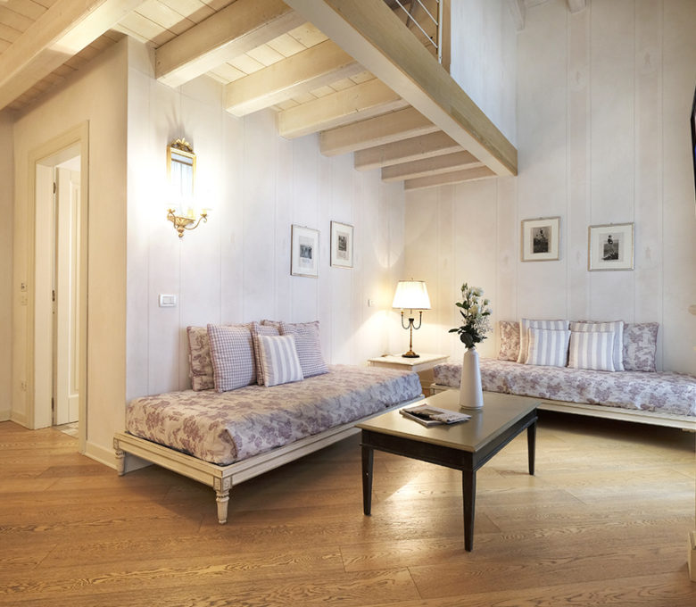
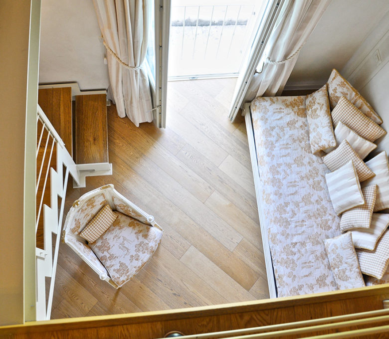
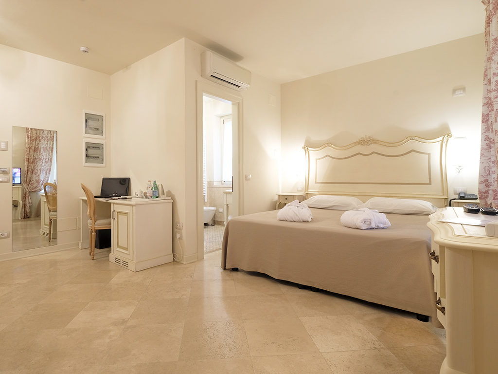
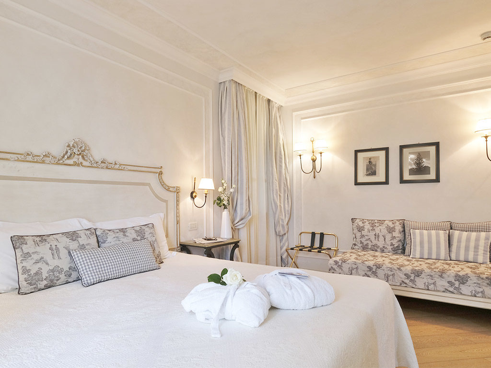
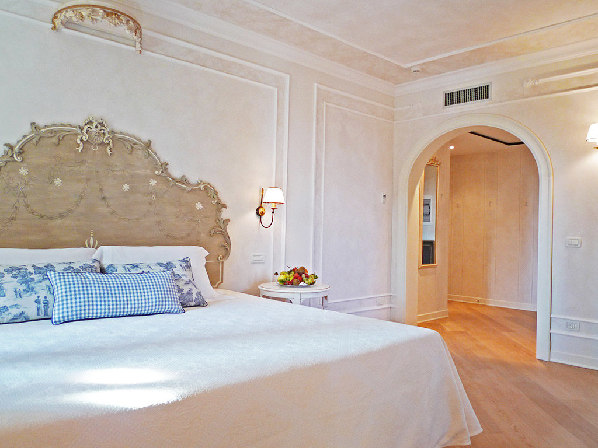

Our wonderful Suites are the largest hotel rooms, with a size of approximately 50m2 and can accommodate up to four adults or families of four people. Spacious and elegant, the suites are distinguished by the comfort and the attention to furnishings that evoke an enchanting ambience thanks also to the shades of the chosen colours. They feature a separate sitting area and a large wooden loft that gives the idea of an open space all completely at your disposal. All suites have two bathrooms.
This room type can satisfy all your comfort and elegance needs and will accommodate you in class thanks to the ample space that makes it ideal for an overnight stay of three people. Equipped with a sitting area, all the Prestige Duplex Rooms have an open loft that divides the room into two different environments: ideal for those looking for a unique and refined retreat. They also have two bathrooms.
This room type is located in the quiet annexe overlooking the garden, on the ground floor and inside the residential complex. The charming interior atmosphere guarantees all the guests maximum privacy and maximum comfort. The Superior room with annexe has a patio where you can enjoy unforgettable moments of tranquillity and well-being and is ideal for up to 3 adults.
Larger in size than the comfort rooms, the superior room overlooks the beautiful gardens surrounding the original 12th-century Abbey. Superior room doesn’t have balcony. It is the ideal solution for those who are looking for a relaxing atmosphere and for those who want to enjoy a soothing landscape.
Comfort rooms encapsulates our philosophy of comfort and convenience. They have different shades of fabric and some are placed on the 2nd floor without balcony. A sober and elegant environment where you can spend a peaceful stay: let yourself go to a complete abandonment and re-energise.
